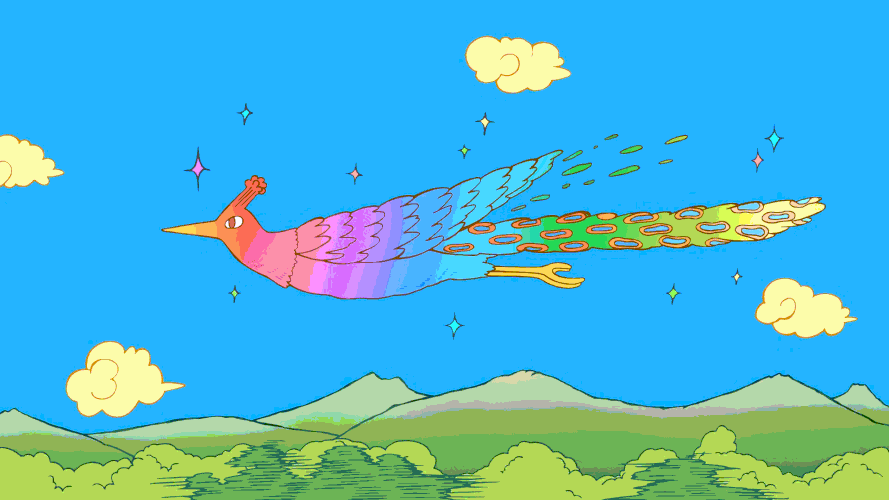
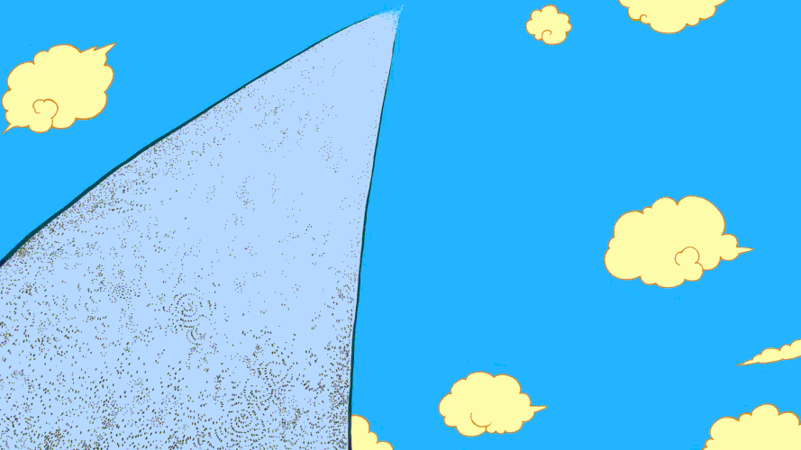
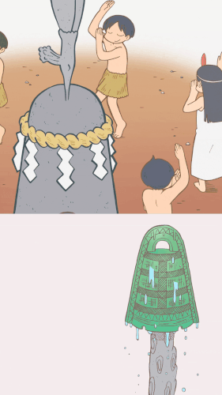

Long ago, there lived a bird.

One day, the bird fell asleep while flying, and a tragedy occurred.
The bird flew beak first into a long rock protruding from the ground.

The bird was afflicted with a disease which caused it to turn to stone as well, and so it remained lodged in the rock as eons passed

In some eras it was worshipped, in others it was used for storage.

As it took root in the region, its purpose changed with time.